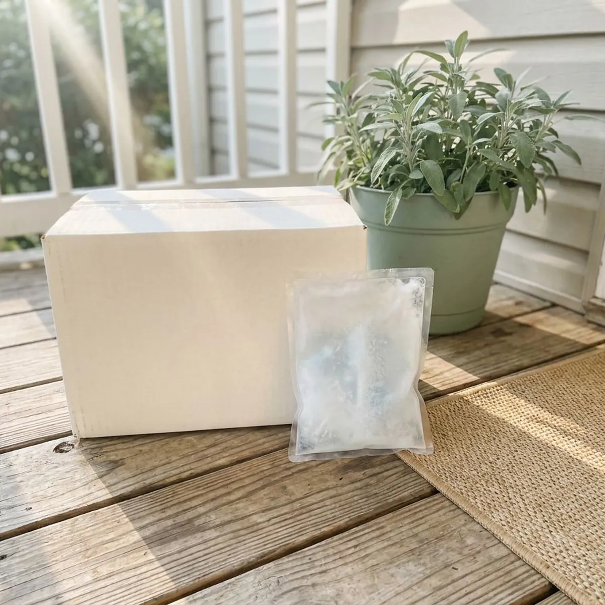

Anti-Aging Peptides in Salisbury, NC
Curious whether peptides could help with sleep or recovery? Adults in Salisbury, NC can get an honest provider review online, usually within a business day.
- Online visit from home
- Licensed US medical providers
- Baseline labs when needed
- Compounded by licensed pharmacies

- Licensed North Carolina Medical Providers
- Personalized Treatment Plans
- Discreet Home Delivery
- Ongoing Medical Support
Provider-Guided Anti-Aging Peptide Therapy in Salisbury, NC
Winston-Salem Weight Loss sets realistic expectations about peptides. Changes come slowly, if at all. Your provider explains which peptides have human trial data, like tesamorelin, and which rest mostly on smaller studies, so you know what the research supports before you start injecting anything.
What the program includes:
- Review of cancer history, blood sugar and current medications
- Baseline and follow-up IGF-1 labs when your provider requests them
- Injection supplies and written mixing and storage instructions

See if anti-aging peptides fit your goals in Salisbury, NC.
Answer a few questions online about your goals and health, and a licensed provider will review them.
Related Wellness & Longevity Options in Salisbury, NC
Longevity, immune and wellness treatments in Salisbury, NC, each reviewed case by case by a licensed provider.


helped
Why patients choose us for Anti-Aging Peptides in Salisbury, NC
Prescriptions are filled by licensed US pharmacies. That matters, since research-grade peptides sold online are not made for human use and their contents are rarely verified.
- Honest Evidence, Providers explain which peptides have human trial data and which rely on smaller studies.
- Cancer Screening, Peptides that raise growth hormone are not prescribed to anyone with active or recent cancer.
- Lab Monitoring, IGF-1 and blood sugar labs may be checked to see how your body is responding.
Anywhere in Salisbury
There is nothing to drive to, because the visit is online. A licensed US compounding pharmacy ships peptides to homes across the Salisbury area when a provider prescribes them.
Licensed care team
Providers from Oakwell MD choose the peptide, the dose and the cycle length. You can message them about injection technique or any side effect.
Safety first
Licensed US pharmacies compound these peptides, and apart from tesamorelin they are not FDA-approved. Your provider follows up on site reactions and water retention in the first weeks.
The care standards behind every Salisbury plan
Winston-Salem Weight Loss runs on the Oakwell MD clinical model: licensed providers, US pharmacies that meet state and federal compounding rules, and follow-up that does not stop when the package arrives. Every treatment on this site goes through the same screening throughout Salisbury, NC.
How Anti-Aging Peptide Therapy Works in Salisbury, NC
How Anti-Aging Peptides Work in Salisbury
Peptides are short chains of amino acids that act as signals, a bit like small hormones. Sermorelin and tesamorelin work by nudging the pituitary to release its own growth hormone in natural pulses, mainly during sleep. A few work right where they are applied. GHK-Cu, a copper peptide, is applied to skin to support collagen. Effects tend to be gradual, and research quality varies a lot from one peptide to the next.

Who Anti-Aging Peptides Are For
Adults in midlife or later who want help with sleep quality, recovery from exercise or skin aging are the usual candidates. Peptides fit people whose basic habits are already in place. Active cancer rules it out. People expecting big changes fast tend to be let down, and pregnancy excludes several peptides, so your provider helps pick a realistic target like sleep or recovery. Your provider decides which peptide fits.
Dosing and Schedule in Salisbury
Sermorelin is usually a small subcutaneous injection at bedtime, often five nights a week. Needles are tiny, similar to insulin pens. GHK-Cu creams or serums go on clean skin once or twice a day, typically the face and neck. Many plans start low and adjust after four to six weeks, and a lot of programs run in cycles, such as three months on followed by a break and a lab check. Mixing and storage instructions come with the first shipment.
What to Expect Week by Week
In the first two weeks, some people notice deeper sleep or more vivid dreams. Others notice nothing. Over one to three months, changes in recovery, energy or skin texture may show up for those who respond, while body composition changes, if any, are modest and slower. An IGF-1 test may come at about two months. If there is no meaningful benefit after a fair trial, your provider will talk about stopping.
Side Effects of Peptide Therapy in Salisbury
Redness, itching or swelling at the injection site are the most common side effects. Growth hormone releasing peptides can also cause headache, flushing, mild water retention, joint aches or tingling in the hands. Blood sugar can rise. That matters for anyone with diabetes or prediabetes, and your provider may ask for an A1C or fasting glucose before and during treatment. Topical peptides occasionally cause skin irritation.
Eligibility and Screening
Your intake asks about goals, medical history, cancer history, diabetes, pregnancy and current medications. The cancer question comes first. Peptides that raise growth hormone are generally avoided in anyone with active cancer or a recent history, because growth hormone and IGF-1 can encourage cell growth. Baseline labs may include fasting glucose and IGF-1. Uncontrolled conditions such as high blood pressure are addressed first.
How Anti-Aging Peptides Compare to Other Options in Salisbury
Tesamorelin is FDA-approved for one specific use, reducing abdominal fat in HIV-associated lipodystrophy, and is used off-label elsewhere. Almost everything else in this category is compounded without FDA approval. Prescription growth hormone is not used for aging. For weight loss, semaglutide and tirzepatide have much better data, and immune peptides are a separate program with a different purpose. Your provider can help compare them.

How the Online Process Works
You begin with a short online questionnaire about your goals, health history and medications. Within about a business day a licensed provider reads your intake and may ask for labs like IGF-1 or a recent metabolic panel before deciding. When it is appropriate, a licensed compounding pharmacy fills it. Supplies come in the box. Check-ins happen at about four and twelve weeks.
Anti-Aging Peptides Near Me in Salisbury, NC
Local peptide clinics in Salisbury often require several in-person visits, and some sell packages before a medical review even happens. Online review comes first here. You reach providers who know the evidence and will say when a peptide is unlikely to help.
To decide, the provider needs your goals, medical history and full medication list. Cancer history matters most. Recent bloodwork helps a lot, because an IGF-1 or A1C result lets the provider set a safe starting dose without waiting for new labs.
Shipping covers Salisbury and nearby towns. Medication arrives cold-packed in an unmarked box, typically within about a week. Later steps, like a dose change or a lab review, happen by secure message without a drive across Salisbury.
Is Anti-Aging Peptides right for you?
Five quick questions, then a licensed provider reviews your answers. No commitment.
Winston-Salem Weight Loss at a glance
- Online care for Salisbury, NC and nearby
- Online visits, no office wait
- Discreet delivery to your door
- 4.9-star rated by 438+ Winston-Salem-area patients
Salisbury patients
- Population
- 36,319
- Visits
- Online, from anywhere in Salisbury
- Delivery
- Salisbury and communities nearby
- Nearby
- Thomasville, Winston-Salem, High Point, Kernersville
Patients in Salisbury, NC use an online clinic for anti-aging peptides because they get a medical review and pharmacy-made medication instead of research vials.
Salisbury map
Everything we treat in Salisbury, NC
Weight loss is where most patients start. The same provider-reviewed, shipped-to-you model covers peptides, sexual health, hair, sleep and longevity.


How to Get Started With Anti-Aging Peptides in Salisbury, NC
Here is what happens between your first answers and your first check-in.
Answer a Few Questions
Complete a short online questionnaire about your goals, health history and medications. Most people finish in about ten minutes.
Provider Review and Labs
A licensed provider reviews your answers and may request labs such as IGF-1. If a peptide fits, they choose the dose and cycle.
Treatment and Check-Ins
Your peptide ships from a licensed US compounding pharmacy with supplies and instructions. Check-ins track results and side effects.
Frequently Asked Questions About Anti-Aging Peptides in Salisbury
They may fit if you are in midlife or later and want help with sleep, recovery or skin. Active or recent cancer rules them out.
You see the price once a provider has reviewed your case. The questionnaire is free.
Some people sleep better within two weeks. Changes in recovery or skin usually take one to three months, if they happen.
Growth hormone releasing peptides can affect blood sugar and some diabetes medications. List every prescription and supplement on your intake so your provider can check.
Only one, tesamorelin, is FDA-approved, for abdominal fat in HIV-associated lipodystrophy, and other uses are off-label. The rest are compounded medications without FDA approval.
Online research peptides are not made for people, and nobody checks what is in the vial. Prescription peptides from a licensed pharmacy come with dosing oversight and quality standards.
Expect occasional redness where you inject. Some people get headaches, flushing, water retention or a small rise in blood sugar.
Yes, most peptides can be stopped without a taper. Let your provider know so refills are paused and your plan is updated.
What patients say about Winston-Salem Weight Loss
Angela W.
One tablet a day instead of three products. Six months in the thinning at my part has filled in noticeably and the check-ins kept me consistent.
Hair Growth · Thomasville, NCMarcus T.
What sold me was that they did not just mail a kit. My provider adjusted my dose twice based on how I was feeling and actually answered my messages. Down more than I expected and my blood pressure is finally normal.
Tirzepatide Injections · Salisbury, NCChris B.
After losing the weight I was terrified of gaining it back. The maintenance plan tapered me down with guidance and I have held steady for a year.
Weight Loss Maintenance · Kernersville, NCLaura S.
Honest from the start. The provider told me which option fit my history and why, and when I hit a plateau they changed the plan instead of just raising the dose. Felt like real medicine, not a subscription.
GLP-1 Weight Loss · Thomasville, NCPriya S.
I will never do needles, so the dissolving tablet was the only reason I tried this. Easy morning routine, discreet packaging, and the care team explained every step before I paid anything.
Semaglutide Pills · Salisbury, NCJordan M.
No awkward waiting room, no pharmacy counter. The chewable they recommended works and the package looked like anything else on the porch.
ED Treatment · Salisbury, NCReviews reflect individual experiences. Results vary and treatment is prescribed only when clinically appropriate.
Areas We Serve Near Salisbury, NC
Important safety information. GLP-1 medications (semaglutide, tirzepatide) are not for everyone. Do not use them if you or a family member have had medullary thyroid carcinoma or Multiple Endocrine Neoplasia syndrome type 2, if you are pregnant or breastfeeding, or if you have a history of pancreatitis without discussing it with your provider. Common side effects include nausea, constipation, diarrhea and reduced appetite. Compounded medications are prepared by licensed pharmacies and are not FDA-approved. A licensed provider decides whether any treatment is appropriate for you.